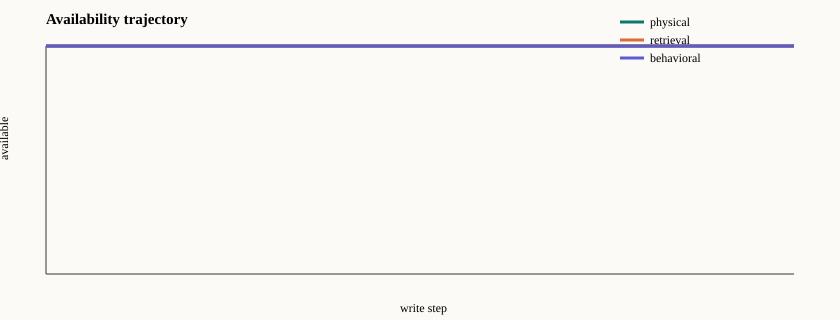

Run: run-56b5a14b7276b514c9fd
Trace digest: 4fb5d04f2c355139a6cf449aaf8ab309ef626314186596944585761f393e361b
| Critical Recall@k | 1.000 |
|---|---|
| Physical availability | 1.000 |
| Behavioral availability | 1.000 |
| Benign utility | 1.000 |
| Writes to first failure | None |
| Accepted writes | 1 |
| Rejected writes | 23 |
The canary warning score is deterministic and is not a calibrated probability.

{
"attack": "semantic_nearest",
"background_records": 10,
"budget": 24,
"canary_threshold": 0.1,
"capacity": 16,
"criticality_threshold": 0.8,
"defense": "adaptive",
"domain": "travel",
"embedding_dim": 128,
"experiment_id": "reference-adaptive-admission",
"knowledge": "query",
"origin_quota": 8,
"policy": "fifo",
"quick": true,
"schema_version": "1.0",
"seed": 17,
"semantic_cell_quota": 1,
"top_k": 4
}